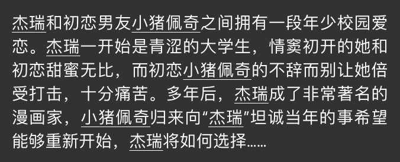

The Ai Writer that i used is:
I inputted cats and the output i got is the following
" They are so cute. I love them. You should see the size of their eyes. They are so big and round and have lots of lashes. They look like little raccoons. This is a cute picture of the girls. They are so cute together. Today I am going to the zoo. The zoo is really cool. It is really big and everything is clean. You can see all kinds of animals. There is a lion, a tiger, a giraffe, a rhinoceros, a snake, a horse, a pony, an elephant, and a monkey. The monkey is really funny.
To comment and analyze on this piece of work with the seven degree Mr.Chen asked us to use. Overall I think this is good with the descriptions with all the adjectives that are given.
Permanence:the state or quality of lasting or remaining unchanged indefinitely. I would say it isn't very on topic since the fact i searched the word cats and it gave me raccoons little pretty girls and the zoo.
Artistry: creative skill or ability: this is not creative at all it's like the opposite of creativeness since it's like repetitive the whole time.
Suggestiveness: It's not related to cats at all not at all.
Universality: This is like one of the onlycategory that it fits it has a wide variety of species and such
Spiratual value: IT has spirits totally no sarcasm it's very spirit-ish.
Intellectual Value:Does it makeme think about what it wrote? It doesn't really provide me with any reflection-ish thinking so no
Style: it doesn't have a style at all like seriously none. It's just repetitative.
In summary this AI writer is convininent but it sucks.
中文版的AI Writer呵呵

呵呵，我们实话实说吧，我看不是很懂这一串东西。但是这个描写我们亲爱的小猪佩奇和可爱的杰瑞真的是一对很好磕的cp啊啊啊啊啊啊啊啊啊。他这个描写手法等东西对我来说已经超出我自己的能力所以我以后可能会用这个写一些自命题的读书笔记。哈哈哈哈哈哈哈哈哈哈千万不要跟语文老师说不然他就会和我妈妈说然后我妈妈就会跟我爸爸说所以我就shi了。